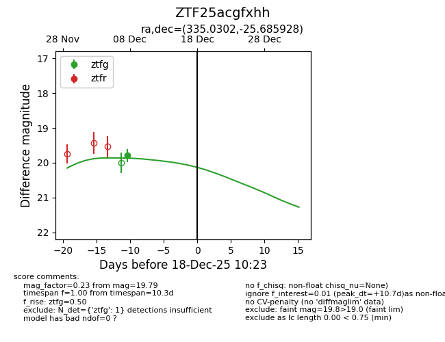
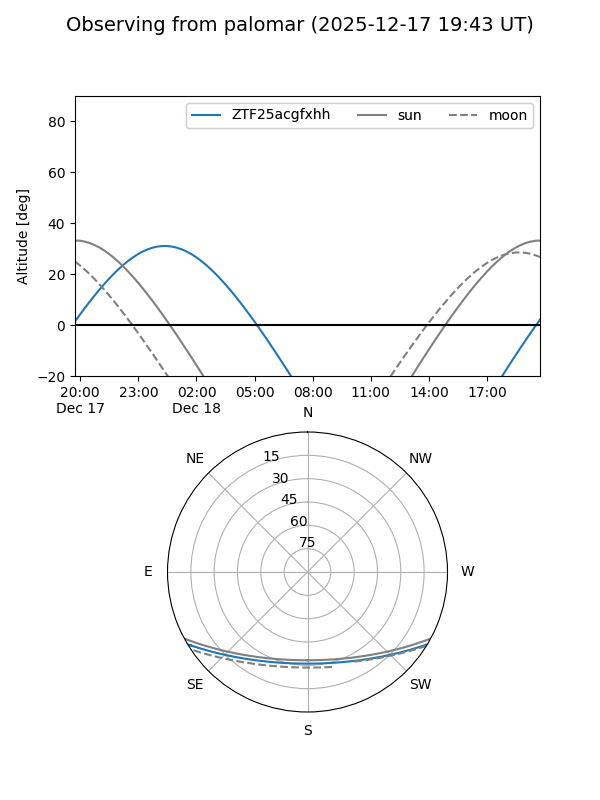

ZTF25acgfxhh
Target ZTF25acgfxhh at 2025-12-18 11:17
Aliases and brokers:
FINK: fink-portal.org/ZTF25acgfxhh
Lasair: lasair-ztf.lsst.ac.uk/objects/ZTF25acgfxhh
ALeRCE: alerce.online/object/ZTF25acgfxhh
alt names
ZTF25acgfxhh (ztf,fink_ztf)
Coordinates:
equatorial (ra, dec) = 335.0302,-25.68593
equatorial (HMS+DMS) = 22:20:07.26,-25:41:09.34
galactic (l, b) = (26.6146,-56.21474)
Photometry
last ztfg=19.79
1 ztfg detections
Lightcurve

Visibility


Additional plots